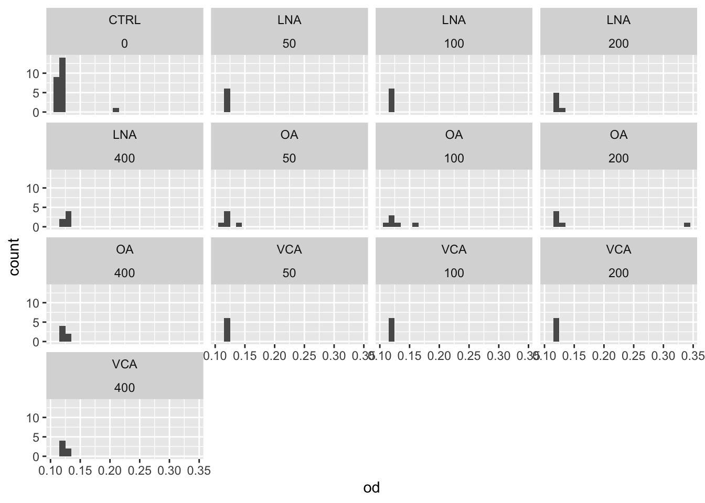
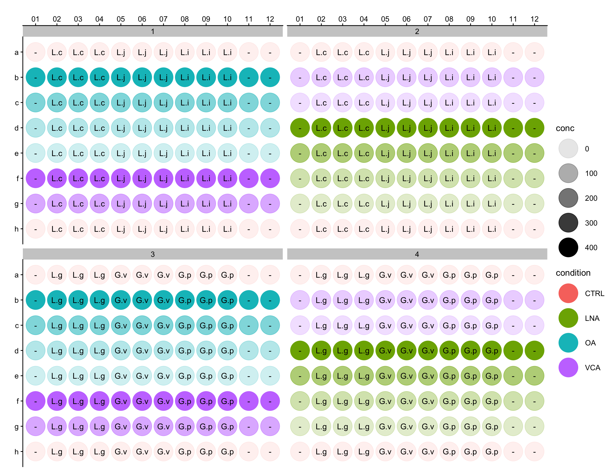
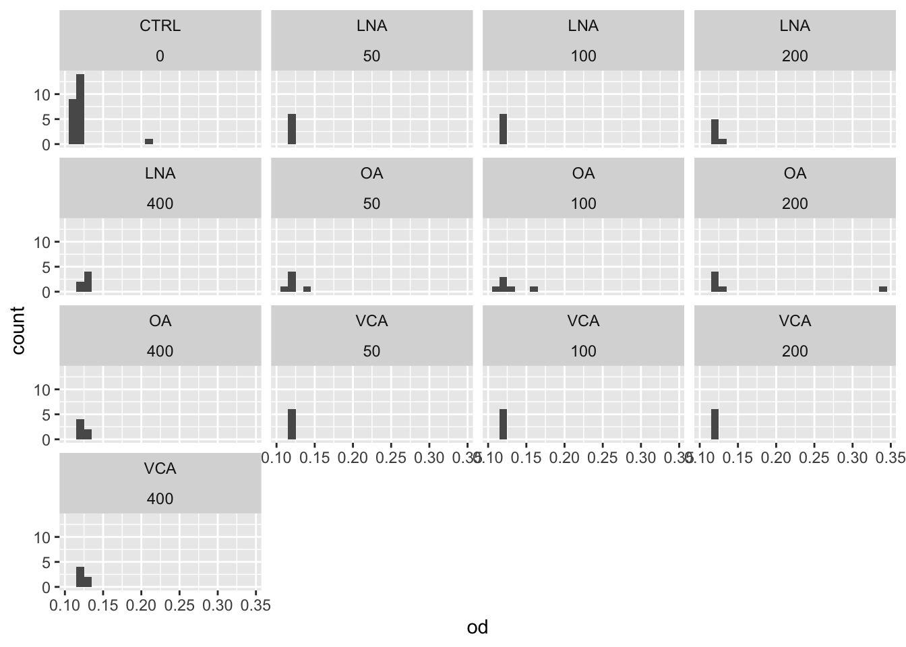
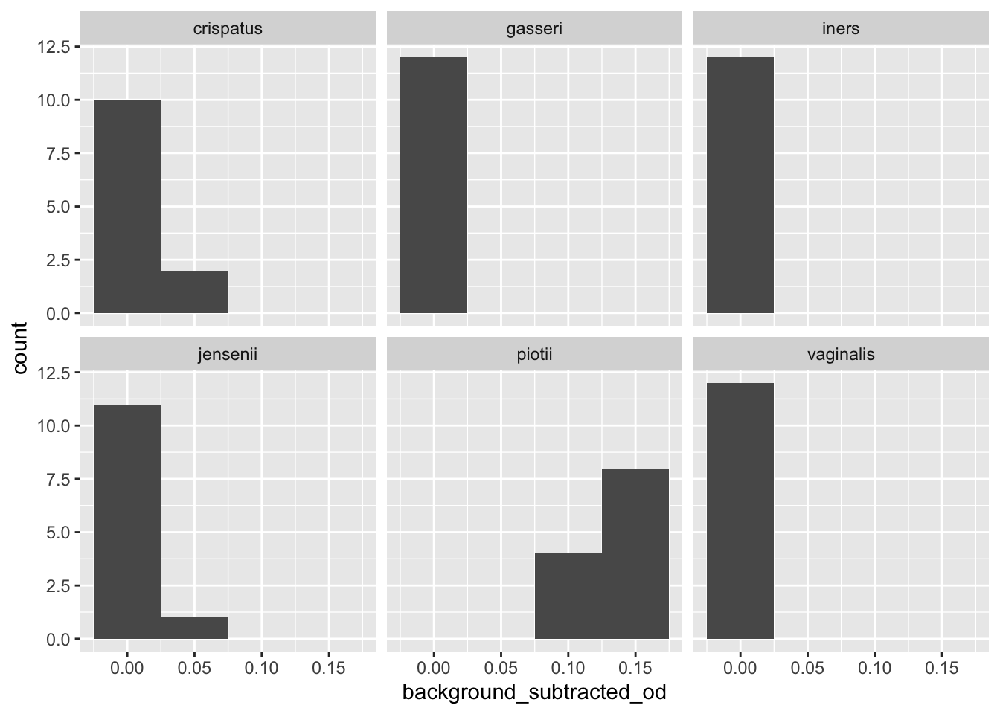
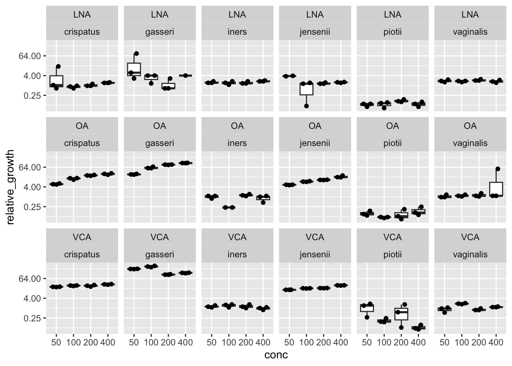

media_background %>%
ggplot(aes(x=od)) +
geom_histogram(binwidth = 0.01) +
facet_wrap(~condition+conc)
Learn how to use RStudio and the
tidyversefor data exploration
There are five files to download and place in your R project folder.
Each row of this table is a well on a plate that was measured. This has the bacterial isolate that was tested, the growth condition (long chain fatty acid) and the concentration of the long chain fatty acid.
plate_id – an identifier of which plate was measured
row – row of the plate (A-H)
column – column of the plate (1-12)
bug – the isolate/species that was tested in this well condition - which long chain fatty acid (LCFA) was added conc - what was the concentration of the LCFA in this well?
plate_id – an identifier of which plate was measured
row – row of the plate (A-H)
column – column of the plate (1-12)
od - the optical density that was measured in this well. This is a measure of bacterial growth.
Data is often in tables, and the easiest way to store tabular data is in csv or tsv format.
csv - comma separated values
tsv - tab separated values
to read in data stored this way use read_csv(filename) or read_tsv(filename)
metadata <- read_csv("data/metadata.csv")binding tables togetherWe have data from 4 different plates in separate csv files. Use bind_rows to make a single table with all the data.
plate_1 <- read_csv("data/plate_1_data.csv")
plate_2 <- read_csv("data/plate_2_data.csv")
plate_3 <- read_csv("data/plate_3_data.csv")
plate_4 <- read_csv("data/plate_4_data.csv")
all_plate_data <- bind_rows(plate_1, plate_2, plate_3, plate_4)joining metadata to the dataConnect the metadata to the plate reader data using left_join

joined_data <- all_plate_data %>%
left_join(metadata)On excalidraw.com or pen and paper, create a visualization to answer the questions below. Check out the data visualization cheatsheet for inspiration. Think about values you’d have to compute, or if you have everything you need already in our joined_data table.

Option 1: What is the spread of values you typically see in the no media controls for different concentrations of LCFA? Bonus: are there any effects of where the well is on the plate with the values measured?
Option 2: What is the typical growth in the media of the different bugs without any LCFA?
Option 3: How do the different LCFAs tested impact the growth of L. crispatus?
Option 4: Are there any batch effects between plates? (What conditions are measured on multiple plates, and what conditions are only on one plate?)
media_background <- joined_data %>%
filter(bug == "CTRL")
media_background_medians <- media_background %>%
group_by(plate_id, condition, conc) %>%
summarise(no_bacteria_control = median(od))
bug_no_lcfa_control <- joined_data %>%
filter(condition == "CTRL") %>%
filter(bug != "CTRL") %>%
left_join(media_background_averages) %>%
mutate(background_subtracted_od = od - no_bacteria_control)
bug_no_lcfa_control_medians <- bug_no_lcfa_control %>%
group_by(plate_id, bug) %>%
summarise(no_lcfa_control = median(background_subtracted_od)) %>%
ungroup()relative_growths <- joined_data %>%
filter(condition != "CTRL", bug !="CTRL") %>%
left_join(media_background_medians) %>%
mutate(background_subtracted_od = od - no_bacteria_control) %>%
left_join(bug_no_lcfa_control_medians) %>%
mutate(relative_growth = background_subtracted_od/ no_lcfa_control) media_background %>%
ggplot(aes(x=od)) +
geom_histogram(binwidth = 0.01) +
facet_wrap(~condition+conc)
bug_no_lcfa_control %>%
ggplot(aes(x=background_subtracted_od)) +
geom_histogram(binwidth = 0.05) +
facet_wrap(~bug)
relative_growths %>%
mutate(conc = as.factor(conc)) %>%
ggplot(aes(x=conc, y=relative_growth)) +
geom_boxplot(outlier.shape = NA) +
ggbeeswarm::geom_quasirandom() +
scale_y_continuous(trans=scales::log2_trans()) +
facet_wrap(~condition+bug, ncol=6)